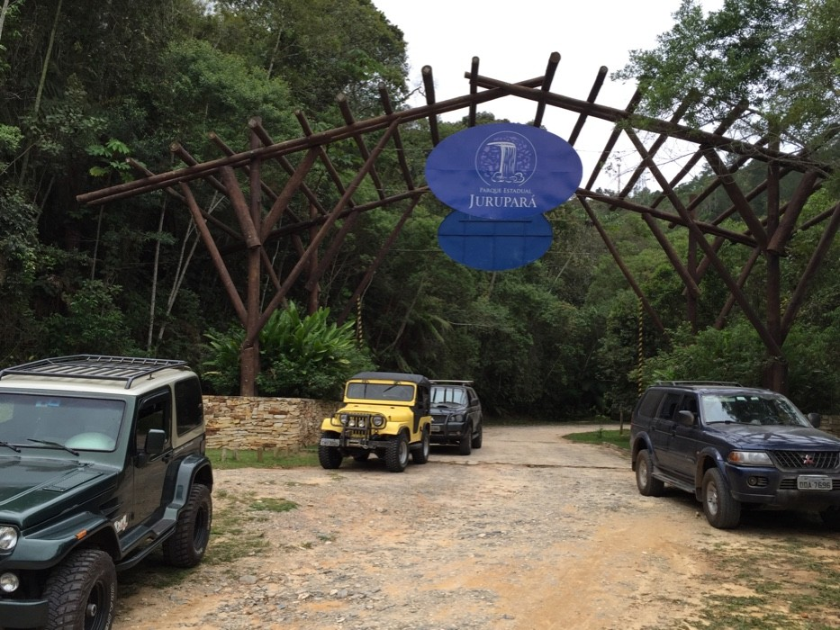
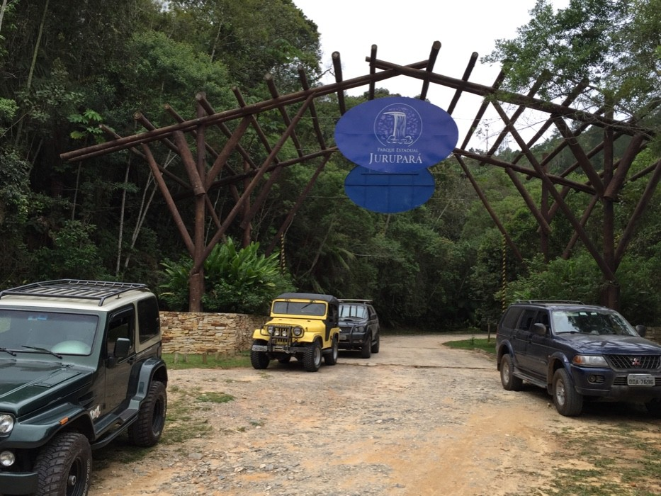
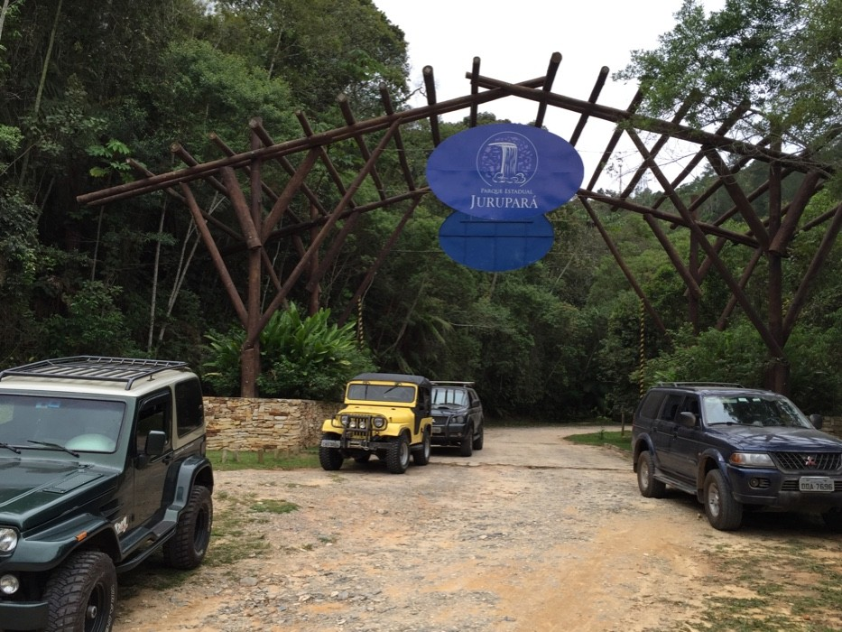

Trilha Parque Jurupará
 

Duração estimada: 3h a 4h (ida e volta)
Dificuldade: Moderada
Dicas: Leve água, protetor solar, roupas leves e cuide da natureza.

Duração estimada: 3h a 4h (ida e volta)
Dificuldade: Moderada
Dicas: Leve água, protetor solar, roupas leves e cuide da natureza.